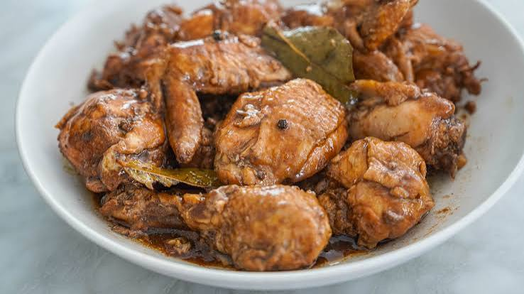

Chicken Adobo

Description
Chicken Adobo is a popular Filipino dish
cooked with soy sauce, vinegar, garlic,
and other delicious ingredients.
Ingredients
- 1 kg chicken
- 1/2 cup soy sauce
- 1/2 cup vinegar
- Garlic
- Bay leaves
- Black pepper
Steps
- Combine chicken and soy sauce.
- Marinate for 30 minutes.
- Cook garlic in a pan.
- Add chicken and cook until brown.
- Add vinegar and bay leaves.
- Simmer until the chicken is tender.
- Serve with rice.
Back to Home